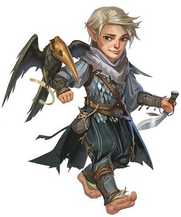
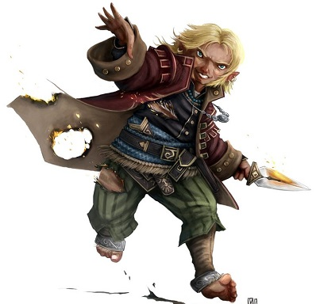
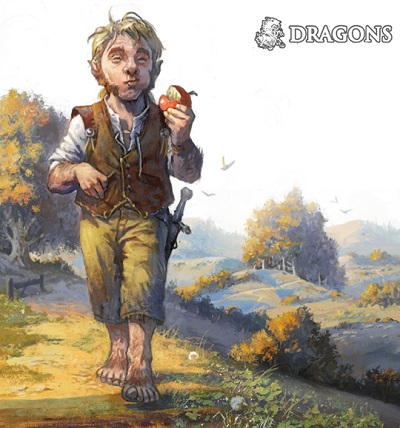
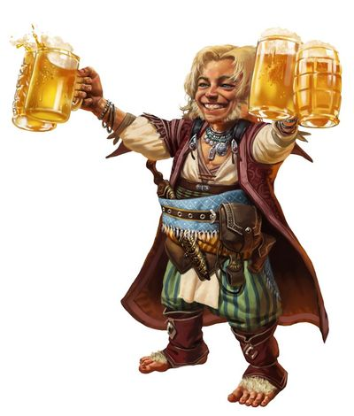

Culture halfeline
Protégés de la déesse Yondalla, la Mère Nourricière, découvrons ce peuple chaleureux et joyeux que sont les halfelins et qui n'aspirent qu'à vivre heureux et en paix dans le confort de leur maison.
Les étapes de la vie
Un halfelin atteint l'âge adulte vers 20 ans et a une espérance de vie d'environ 150 ans.
Enfance
Pendant les dix premières années de leur vie, un halfelin et un humain grandissent de façon assez parallèle. Évidement ils n'ont pas la même taille, mais un humain et un halfelin tous deux âgés de dix ans auront le même niveau de maturité. C'est pendant ces années formatrices que les jeunes acquièrent leurs qualités de demain. Cache-cache, le jeu préféré des enfants, est presque toujours joué en extérieur. Un autre jeu qu'ils affectionnent est le Chamboule tout, dans lequel un petit objet comme un morceau de bois est placé à une certaine distance et, chacun à leur tour, les jeunes halfelins doivent essayer de le toucher à coups de projectiles, marquant des points pour chaque tir réussi.
Adolescence
De dix ans à l'âge adulte, la croissance des halfelins ralentit en comparaison de celle de leurs comparses humains. L'adolescence dure pour eux une dizaine d'année et est caractérisée par beaucoup moins d'angoisses existentielles que celle typique des adolescents humains. Durant cette période, les adolescents sont encouragés à essayer une large palette de disciplines et une grande variété de métier. Le fromager, par exemple, sera aidé par tous les jeunes du village pendant de nombreuses années. Et si l'un d'eux y trouve un réel plaisir, il passera alors plus de temps avec lui, jusqu'à ce qu'il ait appris tout ce que le fromager pouvait lui enseigner sur son activité.
Âge adulte
Les halfelins ont le plus grand respect pour l'expérience et la sagesse, et c'est donc naturellement qu'ils donnent aux anciens leur affection et leur confiance. Hormis l'ainé à la tête d'une famille, les halfelins adultes, même de différentes générations, se considèrent mutuellement comme égaux. Seuls les plus jeunes sont sujets aux règles et aux contraintes imposées par l'autorité. Chaque halfelin adulte vivant dans le terrier y est donc simplement parce qu'il le désire.
Le terrier
Pour les halfelins le symbole de la maison, de la famille et de la communauté, sera toujours le terrier et le nid douillet et chaleureux qu'il renferme, avec son feu de cheminée toujours crépitant, jamais éteint, autour duquel on passe une soirée de détente ou on discute entre amis. Aucune habitation halfelin ne se conçoit donc sans un foyer de cheminée ou un âtre, et bien que l'on trouve autant de terriers différents qu'il y a de climats et de terrains, toutes les habitations halfelines ont au moins ceci en commun. Autant que possible il y aura aussi des fenêtres, qui seront ouvertes tous les jours, sauf les plus froids. Bien aéré donc, le terrier est toutefois protégé contre les forts courants d'air par des volets de bois, de cuir ou de peaux tannées, en cas de tempêtes ou de fortes rafales.
Contrairement aux nains, les halfelins gardent eux leur maison fortement illuminée avec des lampes dans chaque pièce, et ce sont de vrais connaisseurs en matière de confort. L'intérieur d'un terrier sera décoré aussi douillettement que les habitants peuvent se l'offrir. Le plancher sera revêtu de couvertures, nattes et autres tapis. Chaque halfelin, aussi pauvre soit-il, aura toujours une table et quelques tabourets, et au moins une chaise confortable bien capitonnée. Le lit sera petit mais douillet, son matelas rempli de paille propre ou de plusieurs oreillers mous. Le manteau de la cheminée, en bois, comportera une grande variété de décorations, et chaque objet possède son histoire. Les peintures et les statues sont rares car les halfelins préfèrent généralement que leurs trésors soient aussi agréables à regarder qu'utiles. Les halfelins sont tellement attachés à cette conception du foyer que même ceux qui vivent à la surface éprouvent le sentiment irrésistible de transformer leur antre pour qu'elle se rapproche au maximum de leur terrier d'origine... même lorsqu'ils logent dans une simple chambre à l'auberge !
La famille
ESPRITS FESTIFS
Les fêtes sont monnaie courante chez les halfelins. Les anniversaires, par exemple, sont toujours prétextes à de grandes beuveries et il est rare qu'une famille ne passe un mois sans en fêter au moins un. On s'attend aussi à ce que les invités ne viennent pas sans leur fromage, leur pain ou leur vin, car tout le monde se doit de participer pour qu'une fête soit réussie. Ces rejouissances jouissent d'une grande notoriété chez les autres races civilisées.
Un terrier est occupé par tous les membres d'une même famille. Peu importe la taille du terrier et de la famille, la maison doit être capable d'accueillir aussi bien une vingtaine de résidents qu'un seul. Un terrier très peuplé aura un patriarche ou une matriarche (parfois les deux) qui présidera tout ce petit monde avec une autorité réconfortante. Quatre générations d'une même famille vivant dans un terrier est une chose habituelle, même si parfois un couple fraîchement marié préférera la tranquillité d'un terrier pour eux seuls. Occasionnellement un vieil halfelin peut aussi décider d'avoir son propre terrier, mais de telles demeures individuelles sont perçues comme excentriques par les voisins. Il est d'ailleurs difficile pour la plupart des halfelins d'imaginer que quelqu'un puisse vouloir être seul.
La compagnie d'autres halfelins est importante les membres de cette race. Les familles demeurent proches, complices et unies, aussi grandes soient-elles, et beaucoup éprouvent le besoin de consulter leurs frères et soeurs, leurs enfants devenus grands ou leurs parents lorsqu'ils ont une décision importante à prendre. S'ils n'ont pas de famille dans les environs, ils se tourneront vers des amis, voire même de simples connaissances, à condition qu'ils soient halfelins toutefois. Et même si les conseils ne sont pas toujours pris en compte, les halfelins se sentent rassurés en sachant que d'autres petites-gens ont été averties de leurs hésitations.
Le village
Même lorsqu'ils sont mêlés à la société humaine, les halfelins ne renoncent pas à ce concept propre de village solidaire (ce qui est une preuve de leur largesse d'esprit et de leur bonne volonté) et ils traiteront leurs voisins comme s'ils étaient pour eux des compagnons de villages halfelins, c'est-à-dire en étant toujours prêts à rendre service. C'est ce qui en fait de si bons voisins. Mais les halfelins ne sont pas dupes, ils se rendent compte rapidement lorsque la générosité n'est pas réciproque et n'hésitent alors pas à réduire leur cercle de « villageois » uniquement à ceux qui montrent le même sens de coopération et d'amitié qu'eux.
Les regroupements halfelins restent généralement petits et s'étendent à des villages d'une centaine d'habitants, pas plus, ou des comtés dispersés dans un empire humain ou une forêt gouvernée par un roi elfe. La devise de ces villages halfelins, peuple pragmatique, est « un maximum de confort pour un minimum d'effort ». Ceci se traduit par l'adresse des artisans, qui permet un haut niveau de qualité de vie, et le fait que la communauté repose sur l'idée de partage. Le boulanger distribue en effet son pain à tous les villageois, comme le fait le fromager avec son fromage, le brasseur avec sa bière. Et même si la famille du boulanger gardera sans doute pour elle le meilleur pain, chacun dans le village obtiendra une part équitable. La construction de chaque terrier fonctionne elle aussi sur le même modèle de coopération. Le constructeur le plus expérimenté supervisera une légion d'ouvriers formée par tous les hommes du village, de sorte que les fondations seront achevées en seulement quelques jours.
Caractère
CHANCEUX ET SUPERSTITIEUX
Tous les aventuriers qui ont cotoyé des halfelins lors d'une aventure vous parleront de la chance insolente des petites-gens. Ce n'est pas un mythe. En fait, les halfelins croient en la chance, ils la provoquent, la défient, l'attirent. Pour cela, ils aiment répéter certains gestes ou reproduire certaines attitudes qui leur ont porté chance dans le passé. Certains appeleraient cela de la superstition, eux y voient plutôt une sorte d'hommage à Yondalla qui sans aucundoute pour eux se cache derrière cette bonne fortune, surtout dans les moments les plus dramatiques.
Les inimitiés entre halfelins sont rares, et ceux qui participent à des bagarres risquent d'être fortement critiqués par leur propre famille pour manque de maîtrise de soi-même. Car bien que les discordes et les désaccords soient naturels et inévitables dans une vie en communauté, les halfelins s'engagent rarement dans des querelles agressives ou des débats violents. Le mode de vie halfelin aide, il est vrai, à éviter de nombreuses causes traditionnelles de dispute. Le souper, par exemple, est préparé par quiconque a une main de libre, et ceux qui ne cuisinent pas aideront à débarrasser, à nettoyer la salle ou à amuser les jeunes après le repas. Et c'est seulement quand toutes les corvées seront faites qu'un halfelin pourra enfin s'occuper de ses propres affaires. Ce naturel solidaire et soudé des halfelins, toujours prêt à rendre service, fait que les tâches « pénibles » comme préparer le repas ou faire le ménage n'occupent jamais très longtemps, car elles sont faites à plusieurs et laissent donc beaucoup de temps libre pour se reposer ou rêvasser, allongé, les paupières fermées.
Lorsque toutefois une dispute sévère éclate, comme un désaccord à l'intérieur d'un couple au sujet d'un déménagement de terrier, le problème sera résolu calmement, après une période... qui se compte en mois voire en années ! Un membre peut en effet faire remarquer amicalement, après un savoureux dîner serré autour d'une petite table, à quel point cela serait agréable d'avoir assez d'espace pour étirer ses coudes à table. Et une semaine plus tard son épouse pourrait lui répondre, sur le même ton plaisant d'une conversation amicale normale, qu'elle a trouvé fort sympathique qu'il y eût une conversation si intéressante la dernière fois au sujet des age
Les halfelins évitent donc la violence et l'agressivité, mais ils ne manquent pas de courage. Ils sont lents à se mettre en colère et toujours prêts à trouver un arrangement, à négocier calmement pour éviter les disputes. Mais les attaques personnelles ou les insultes délivrées à l'encontre d'un compagnon du village sont mal vues, provoquent généralement l'indignation de la communauté et se retournent finalement toujours contre celui qui les a prononcées. La politesse et la courtoisie sont remarquées et celui qui se montre tolérant envers un voisin qui lui a fait du tort est considéré comme honorable, et son geste comme la quintessence d'un acte de classe.ncements possibles du terrier, conversation au sujet de laquelle tout le monde a donné son point de vue. Il peut donc se passer beaucoup de temps avant qu'un problème ne soit résolu mais, une fois celui-ci réglé, la décision finale est mille fois mieux acceptée car chacun l'a vue arriver et y a participé indirectement, contrairement aux humains qui préfèrent prendre des décisions rapidement, au risque de faire des déçus et des mécontents.
Les émotions
Les halfelins savent comment trouver du plaisir dans les choses simples et n'ont pas honte de montrer leurs sentiments. Un halfelin heureux rira à gorge déployée, un autre éprouvant de l'amour ou de l'affection exprimera ses sentiments sans retenue ni gêne. Les petites-gens aiment aussi raconter et entendre des histoires et écouteront religieusement quiconque leur contera légendes ou exploits. Ils aiment tout naturellement les histoires dans lesquelles un héros petit et intelligent triomphe de ceux qui sont physiquement plus grands et plus forts, mais plus maladroits et moins vifs d'esprit. Les halfelins apprécient également les bonnes farces et les chansons paillardes. Ils savent rire d'eux-mêmes, bien qu'ils ne peuvent s'empêcher de répliquer à une boutade par une autre plus salée, et ainsi de suite indéfiniment.
Mais les petites-gens endurent aussi les mêmes peines que le reste de l'humanité : la mort et la maladie, la souffrance d'un départ, les catastrophes naturelles et autres tragédies. Toutefois, même s'ils sont profondément affectés par de tels malheurs, ils ne le montrent pas aussi ouvertement que les humains, essayant souvent de brouiller les pistes pour ceux qui désireraient connaître l'origine de leur peine. Dans leur vie quotidienne, les halfelins sont aussi remarquablement résistants à la dépression et font montre d'une grande capacité d'adaptation, quelles que soient les circonstances. Si les récoltes sont mauvaises et que la nourriture vient à manquer, ils essaieront d'en tirer un plus grand plaisir en se disant qu'ils ont de la chance de manger une telle rareté. Si le toit d'un trou de halfelin s'effondre et qu'une famille entière n'a plus d'endroit où dormir, ils remarqueront à quel point ils ont été chanceux que personne n'ait été sérieusement blessé ! Même en cas d'agression, la vengeance n'est pas une solution pour la plupart des halfelins.
L'alimentation
BIÈRES HALFELINES
Les brasseurs halfelins sont réputés et leurs boissons très populaires. Cela peut aller de la bière de malt lourde (pour plaisanter, les halfelins servent souvent à un humain qui en boit pour la première fois un couteau et une fourchette avec la chope) aux bières légères et crémeuses. Les vins de fruits sont également appréciés. Mais il convient de noter que, si les halfelins sont portés sur la boisson, ils sont toutefois rarement ivres. L'alcool tend plutôt à les assoupir tendrement et un groupe partageant une bouteille au breuvage fort deviendra seulement détendu, apaisé, tranquille et content sous l'effet de l'alcool ; il ne tombera pas dans l'ivrognerie aveugle ou violente.
Les halfelins adorent boire et manger en grandes quantités. En effet, en dépit de la différence de taille, un halfelin typique mangera autant sinon plus qu'un humain de deux fois sa taille. La plupart des halfelins mangent trois repas copieux par jour, entremêlés de trois importants casse-croûtes : déjeuner, brunch, dîner, goûter, souper et casse-faim, avant d'aller se coucher. Bien qu'ils apprécient un repas de viande occasionnel, particulièrement la volaille ou le gibier à plumes (le rôti de faisan est considéré d'une grande délicatesse), les petites-gens comptent surtout sur le pain, les fruits et le fromage pour se sustenter. Les boulangers halfelins sont célèbres pour leur habileté avec la pâte, réalisant tous types de gâteaux et de pains, et la fabrication du fromage est une autre compétence dans laquelle beaucoup de halfelins excellent.
Ce sont aussi de formidables jardiniers, dépassant de loin n'importe quelle autre race dans la culture des produits alimentaires. Chaque halfelin qui possède un lopin de terre maintiendra amoureusement et d'arrache-pied des parcelles de fruits et légumes de qualité. Les halfelins n'apprécient par contre pas beaucoup les épices dans leur nourriture. Les oignons sont toutefois une exception notable, ils en raffolent et les mangent même crus, comme un humain croque à pleines dents dans une pomme.
Commerce & Troc
Le mode de vie halfelin repose sur l'échange. Les halfelins aiment échanger entre eux, avec les gens de leur village. Ils aiment tellement le troc que cela en devient presque un jeu et parfois ils n'ont pas réellement conscience de la vraie valeur des choses. Mais ils sont aussi doués pour commercer avec les autres races, ont l'oeil vif pour observer les détails et sont généralement rapides pour repérer les marchandises contrefaites ou de basse qualité. Tout en vantant merveilleusement bien les qualités de ce qu'ils ont à offrir en retour ! Ils acceptent alors tout aussi bien l'or que de la nourriture ou des biens de consommation en guise de paiement.
Les énigmes
Un des jeux préférés des halfelins sont les énigmes. Cela peut aller du simple jeu de questions/réponses aux puzzles complexes impliquant des indices vagues et obtus. Il n'est pas rare pour un halfelin de passer une heure ou deux à réfléchir à un problème dans un silence quasi complet, seulement ponctué par « surtout ne me dites pas la réponse ! ». Plus déroutant encore pour le non-halfelin est le jeu des questions, dans lequel chaque participant doit répondre à une question par une autre. Chaque réponse doit être une phrase complète, ayant un rapport avec celle qui l'a précédée et livrée dans les dix secondes sinon le joueur perd. Les experts peuvent faire durer une partie pendant des heures. Quelques fervents adeptes de ce jeu considéreront chaque question qui leur est adressée comme autant d'invitations à jouer, ce qui peut avoir des conséquences déroutantes pour celui qui ne connait pas cette tradition.
Traduit par Grisord